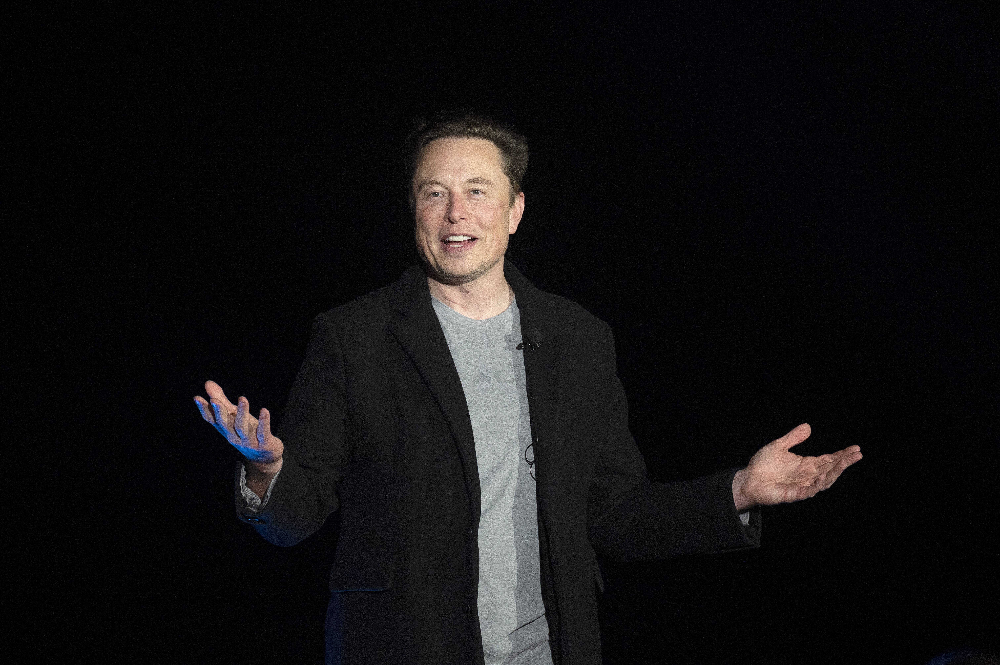

About
Elon Reeve Mask 1971 yil 28 iyunda tug'ilgan - biznes magnat va investor. Mask - SpaceX asoschisi, raisi, bosh direktori va bosh texnologiya direktori , farishta investori , Tesla, Inc. kompaniyasining bosh direktori va mahsulot arxitektori , X Corp. egasi, raisi va texnik direktori , Boring kompaniyasi asoschisi , Neuralink asoschilaridan biri. va OpenAI , va Musk fondi prezidenti. U dunyodagi eng badavlat odam bo'lib, uning boyligi 2023 yil avgust holatiga ko'ra 217 milliard dollarni tashkil qiladi .Bloomberg Billionaires Index va Forbes ma'lumotlariga ko'ra 219 milliard dollar, birinchi navbatda uning Tesla va SpaceXdagi ulushlaridan.

Elon Reeve Mask Janubiy Afrikaning Pretoriya shahrida tug'ilgan va 18 yoshida Kanadaga ko'chib ketishdan oldin qisqa muddat Pretoriya universitetida o'qigan va Kanadada tug'ilgan onasi orqali fuqarolikni olgan. [6] Ikki yil oʻtgach, u Ontario shtatining Kingston shahridagi Queen’s universitetiga oʻqishga kirdi . Keyinchalik Mask Pensilvaniya universitetiga o'tdi va u erda iqtisod va fizika bo'yicha bakalavr darajasini oldi. 1995 yilda Stenford universitetida o'qish uchun Kaliforniyaga ko'chib o'tdi . Biroq, Mask ikki kundan keyin o'qishni tashlab ketdi va akasi Kimbal bilan Zip2 onlayn shahar yo'riqnomasi dasturiy ta'minot kompaniyasiga asos soldi.. Startap Compaq tomonidan 1999-yilda 307 million dollarga sotib olingan va o‘zi topgan pulning 12 million dollariga o‘sha yili Mask to‘g‘ridan- to‘g‘ri X.com bankiga asos solgan . X.com 2000 yilda Confinity bilan birlashib, PayPal ni tashkil qildi .